You are the new hire at the bottom of a 40-floor corporate tower. Walk each floor, do the office chores as short
mini-games, earn paperclips and KPI stars, impress HR and ride the elevator up, floor by floor, until the corner
office on floor 40 is yours. This guide covers everything, from the lobby turnstiles to all 48 mini-games.
The tower has 40 floors in eight departments of five floors each. Every floor you reach gives you a new job title,
from Unpaid Intern in the lobby to Chief Executive Officer at the top. Your career is saved in your browser as you
play, and the game works offline once loaded.
Floors
Department
Job titles
1-5
Lobby & Mailroom
Unpaid Intern → Facilities Coordinator
6-10
Customer Support
Support Agent I → Support Team Lead
11-15
Sales
Sales Development Rep → Regional Sales Director
16-20
Marketing
Marketing Coordinator → Head of Synergy Marketing
21-25
IT & Engineering
Helpdesk Technician → Principal Architect
26-30
Finance
Junior Accountant → Director of Finance
31-35
Legal & HR
HR Generalist → VP People & Culture
36-40
Executive Suite
Vice President → Chief Executive Officer
The mini-games take on the look and content of the department: the same game plays differently in Sales than in IT.
Controls
Everything works with the keyboard, a mouse or touch.
Walk
←↑→↓ or WASD, or click / tap the floor
Interact
Space or Enter next to a desk, printer, colleague or door, or click it
Menu / back / pause
Esc
Shop
O
Perks
P
Training
T
Badge wall
B
Music on / off
M
Quick help
H
Give up a floor quest
G
Each mini-game shows its own controls at the start and along the bottom of the screen.
Your first day: the lobby
A new career starts outside the tower. Pick your company name and colour, your name and your look, then walk in.
You arrive in the Grand Lobby with 50 paperclips, 5 Stock Options and an empty coffee pot.
Check in at the front desk
The receptionist waves you over. The front desk task is always the Jargon Decoder ("Decode the Memo") and it is
free while you check in. Any result counts: finishing it fills your coffee pot, starts the refill and pays the
usual rewards. It also unlocks the Signed In badge.
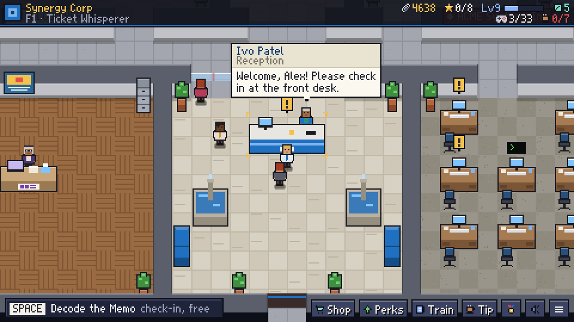
The receptionist asks you to check in first.
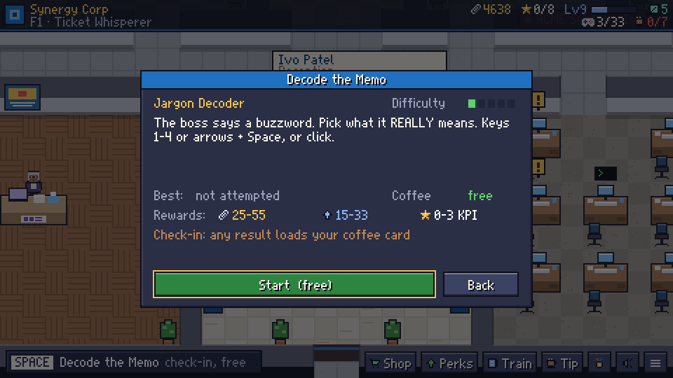
The check-in task is free. Any result loads your coffee card.
The turnstiles
The lobby turnstiles stay closed until you have checked in. The first time through, they take one cup of coffee
from your new card. After that they are always free. Beyond them are the rest of the lobby floor and the elevator.
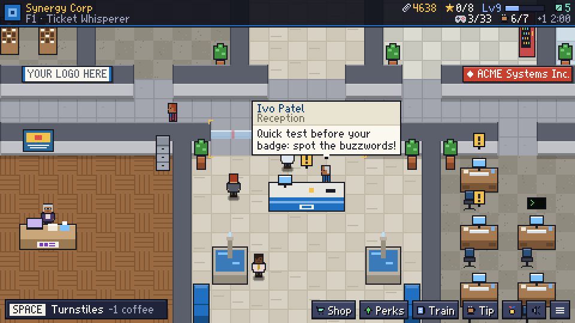
The first pass through the turnstiles costs one coffee.
Tasks and KPI stars
Every floor has 8 workstations (rising to 14 on the top floors). A yellow ! marks a station that is ready.
Walk up to it and press Space to open its task card, which shows the mini-game, its coffee cost, the
rewards, your best result so far and how long the station rests after you play.
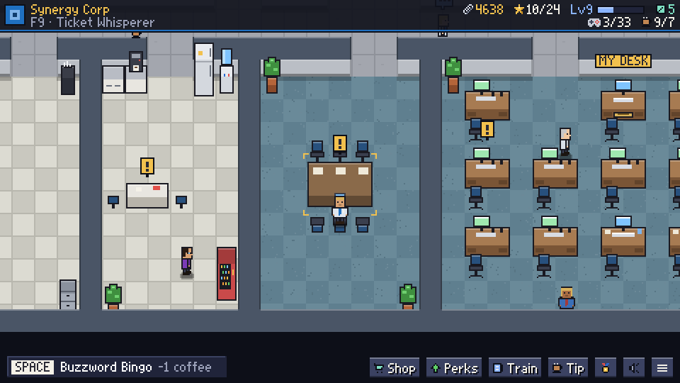
A Customer Support floor. Stations with a yellow ! are ready.
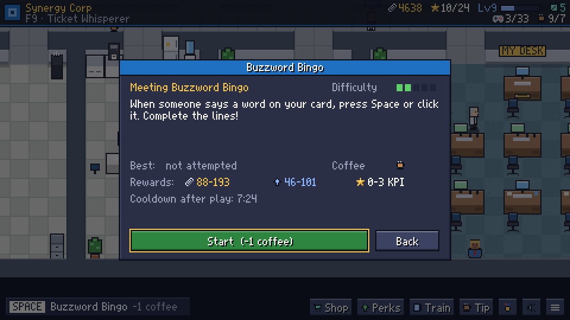
The task card: cost, rewards and the cooldown after playing.
Each mini-game lasts up to about 90 seconds and ends with a score. The score turns into 0-3 KPI stars, and the stars
decide the reward:
Score
KPI stars
Paperclips & XP
under 35%
0
30% of the base reward
35-59%
★
100%
60-84%
★★
150%
85% and more
★★★
220%, plus a 5% chance of a bonus Stock Option
Rewards grow with the floor: a 1-star task pays 25 paperclips on floor 1, about 100 on floor 10 and over 2,000 on
floor 30. Stars add up every time you play, so replaying a station is always worth it; your personal best per
station is kept separately. You can pause any mini-game with Esc. Giving up scores 0.
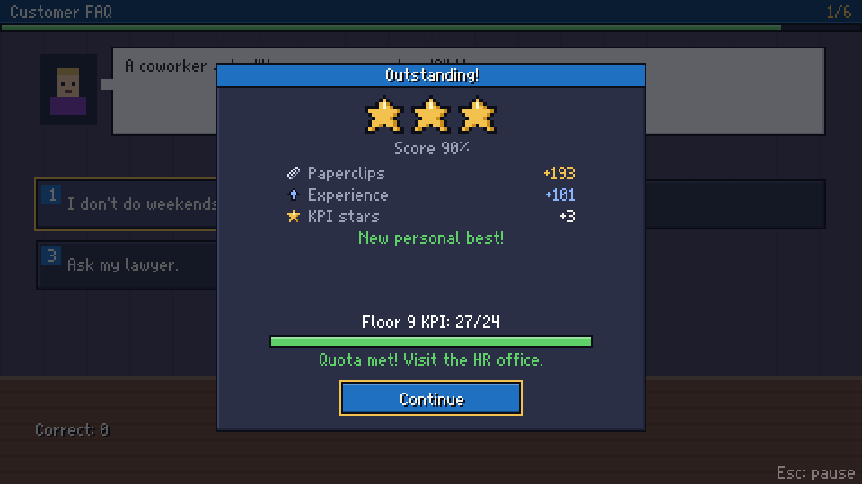
Three stars: paperclips, XP and KPI stars towards the floor quota.
Cooldowns
After you play, the station rests. Simple games come back slowly and complex ones quickly, so every game type is
worth playing. The base cooldown is one minute on floor 1 and grows 8% per floor. A good
home office day on floors 8, 18, 28 and 38 clears every station's cooldown on that floor.
Game type
Coffee
Cooldown
Floor 1
Floor 10
Floor 30
Quick
1
4× base
4:00
8:00
37:16
Medium
2
1.5× base
1:30
3:00
13:59
Complex
3
0.75× base
0:45
1:30
6:59
A Stock Option skips a station's cooldown instantly (from the task card).
Coffee
Coffee is your energy. Your pot holds 6 cups on the first floors and one more every five floors (14 on floor 40).
It refills one cup every 2 minutes, even while the game is closed.
The coffee machine in the kitchen (most floors have one) pours up to 3 free cups once every 15 minutes, per floor. It fills your pot to the maximum, never past it; with a full pot it waits for you.
Promotions top your pot up to full.
The daily stand-up pays a cup, and winning the office cake race pays two (up to the maximum).
Holiday activities on vacation are the only coffee that goes over the maximum.
Stock Options: 3 SO refill the whole pot at once.
Perks: the Bigger Mug adds 2 cups per level and the Espresso Machine refills 10% faster per level.
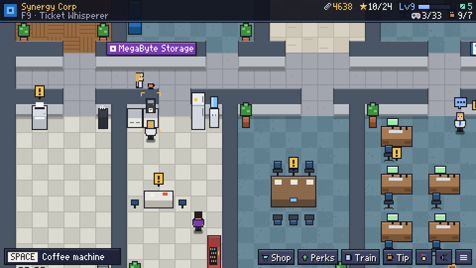
The kitchen coffee machine: 3 cups every 15 minutes.
Ran dry? You can switch on browser Reminders under Menu > Settings: the game then tells you when your coffee is full
again (only while the tab is open in the background, at most 3 a day and never at night).
Getting promoted
To leave a floor you need four things. The elevator panel shows your progress on each one.
KPI stars earned on this floor: 8 on floor 1, then 2 more per floor (26 on floor 10, 66 on floor 30).
Seniority level of at least the next floor's number (level 10 to go to floor 10).
The keycard fee in paperclips: 75 on floor 1, 1,233 on floor 10, about 76,000 on floor 30.
The HR performance review. Once the first three are met, the HR office on the floor will see you.
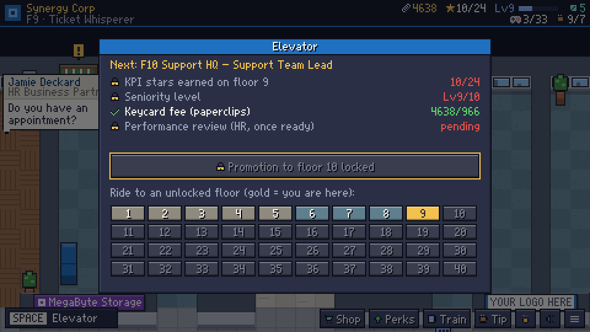
The elevator panel: what you still need, and every floor you can already ride to.
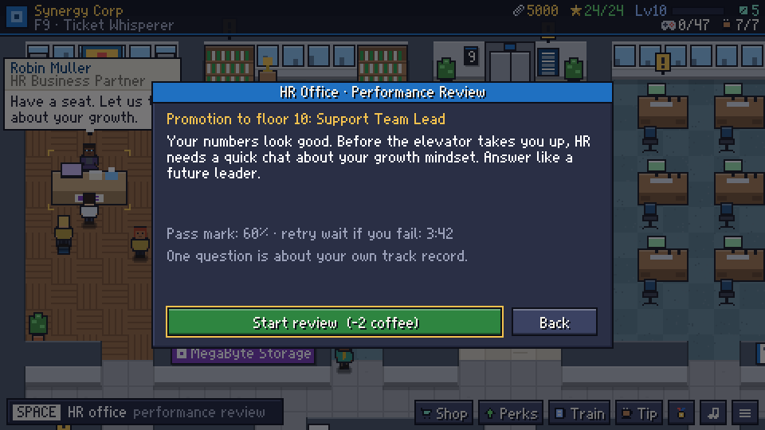
When you are ready, HR invites you to the performance review.
The review costs 2 coffee: seven questions where you tell HR what they want to hear. Get 60% right to pass. If you
fail, HR makes you wait (twice a station's base cooldown) before you can try again. Once you pass, take the
elevator up: you pay the keycard fee and get a new floor, a new title, a full coffee pot and a Stock Option. Going
down to floors you have already reached is always free.
On floors 3, 13, 23 and 33 there may be a shortcut: if you visit HR before you are promotion-ready, they might ask
a favour that makes you ready on the spot. See the lost folder.
Paperclips, XP and Stock Options
Paperclips are the office currency. You earn them from tasks and spend them on keycard fees, perks,
training and desk decorations.
XP fills your seniority level. Every level-up also pays a Stock Option. You need the right level for each
promotion.
Stock Options (SO) are the premium currency. You start with 5 and earn more from level-ups, promotions,
lucky 3-star results and daily stand-ups. Spend them to skip a cooldown (1 SO), refill your coffee (3 SO) or buy
the two executive perks.
The bar at the top of the screen shows your paperclips, KPI stars against this floor's quota, your level, Stock
Options, how many different mini-games you have played and your coffee with the time to the next cup. Click any of
them for details.
Perks, training and the shop
Perk
Effect
Levels
Price
Bigger Mug
+2 max coffee
5
150 paperclips, rising
Espresso Machine
-10% coffee refill time
5
250 paperclips, rising
Ergonomic Chair
+8% XP from tasks
5
300 paperclips, rising
Second Monitor
+8% paperclips from tasks
5
300 paperclips, rising
Golden Stapler
+10% paperclips, forever
1
40 Stock Options
Corner Office Plant
-15% task cooldowns
1
60 Stock Options
The Training Center (T) turns paperclips into XP at 4 paperclips per XP, handy when you have the
stars and the fee but not the level. The Shop (O) sells Stock Option packs. It is a demo: the
checkout is simulated and no real money is ever charged.
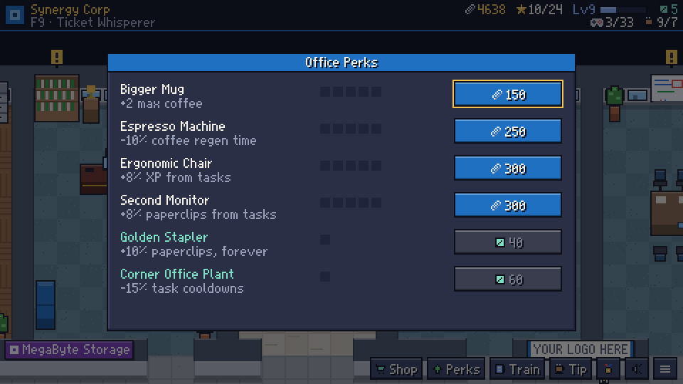
Office perks (P).
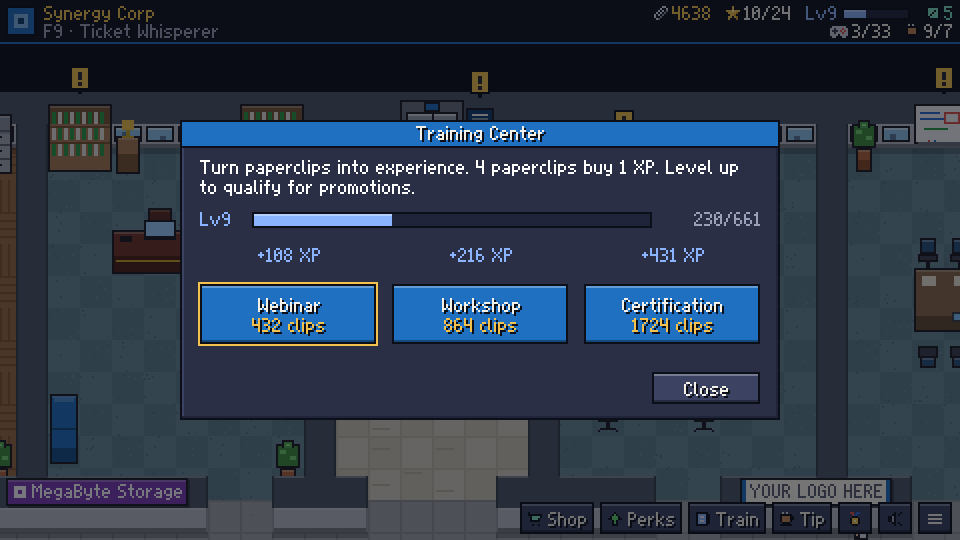
The Training Center (T).
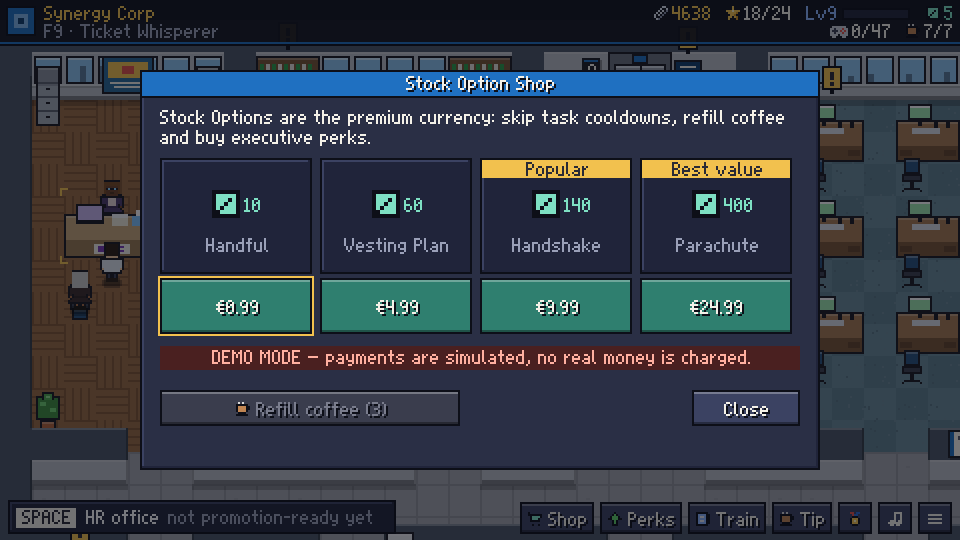
The Stock Option shop (O): a demo, no real payments.
Floor quests
Two stations send you out onto the floor before the desk part starts. A timer runs at the top of the screen;
G gives up.
360 Feedback: find the named colleague, chat with them, then return to the station and fill in their review from what they told you.
Lost Password: your password is your pet's name. Search the floor's temporary whiteboards for your pet's photo, then log back in.
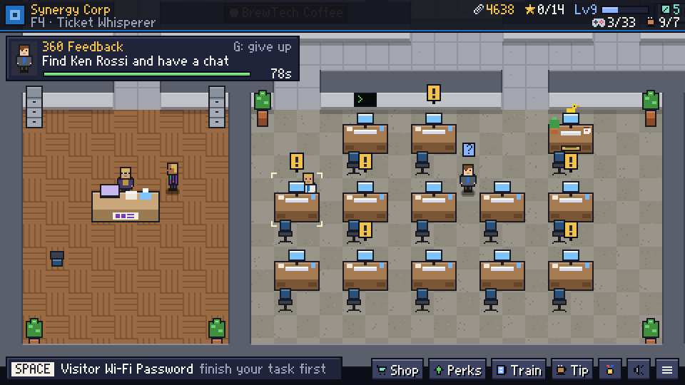
360 Feedback: find the colleague and have a chat.
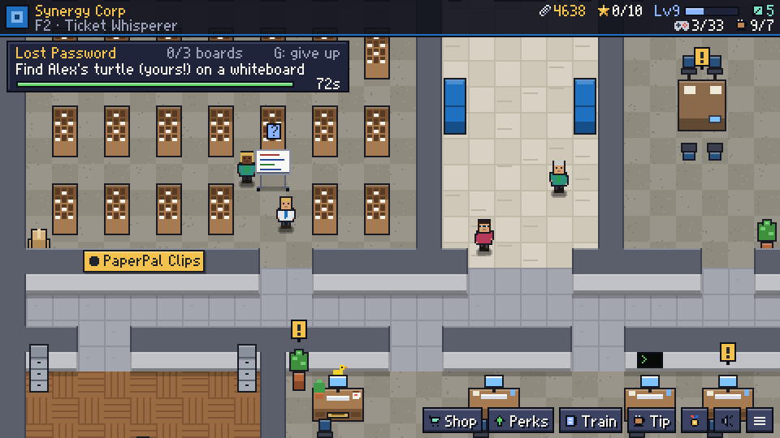
Lost Password: check the whiteboards for your pet.
The daily stand-up
Once a day (after your check-in), a colleague on your floor has a blue speech bubble: they need a quick favour
before stand-up. The favour is one of the quick mini-games and it is completely free: no coffee, no cooldown and
it does not count towards your KPI stars. In return you get double paperclips, XP, a cup of coffee and a 20% chance
of a Stock Option. Do it seven days in a row and the seventh day pays a Stock Option for sure.
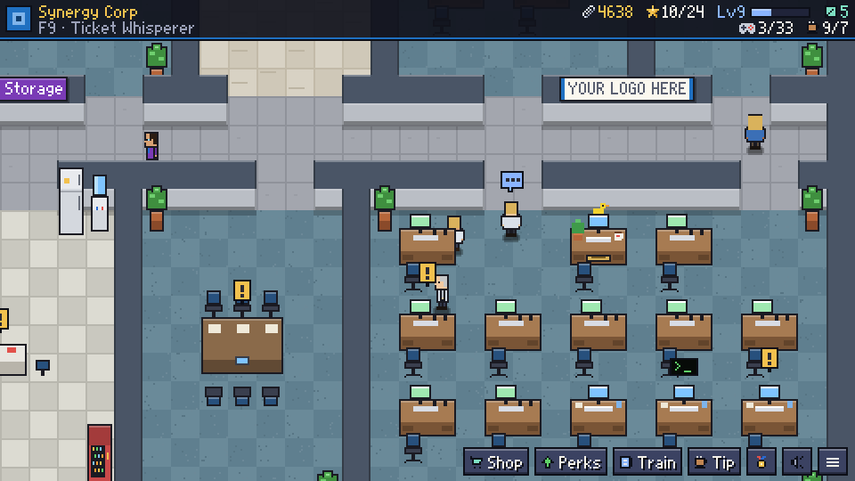
Look for the blue speech bubble.
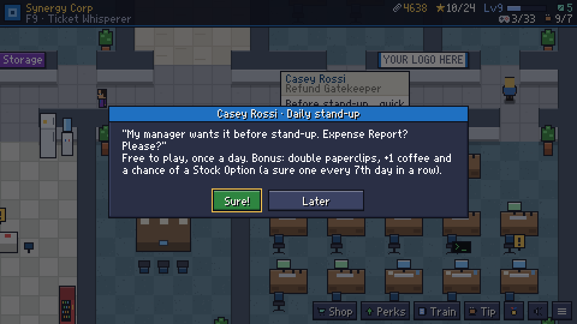
The favour: free, once a day.
Office events
Office life is unpredictable. After you have spent some time on a floor, a random event can break out (roughly every
6-10 minutes). Winning pays a bonus; losing costs nothing.
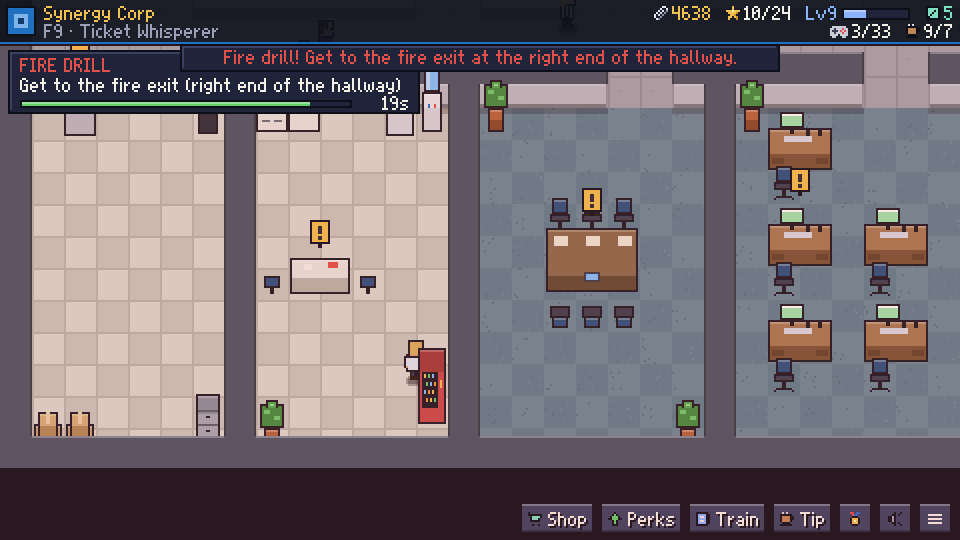
Fire drill. Get to the green EXIT at the end of the hallway in time. Everyone heads out, and nothing else works until it is over. Pays paperclips and XP.
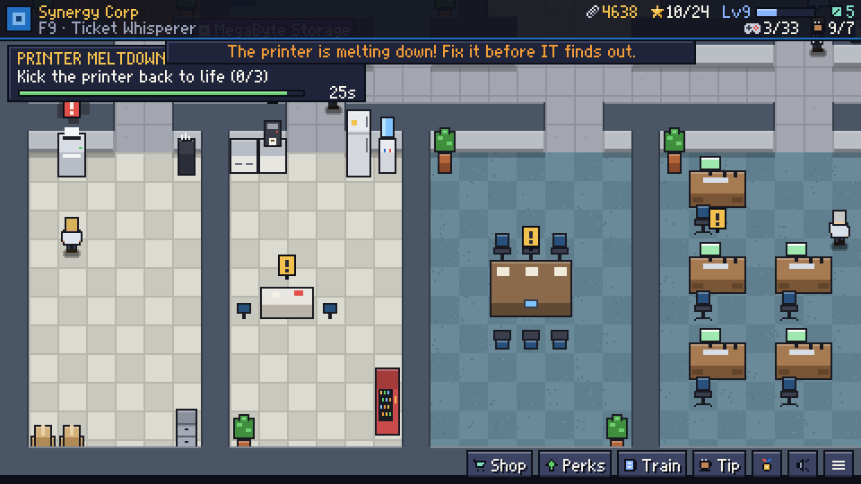
Printer meltdown. The copier is smoking. Run over and kick it back to life three times before IT finds out. Pays paperclips and XP.
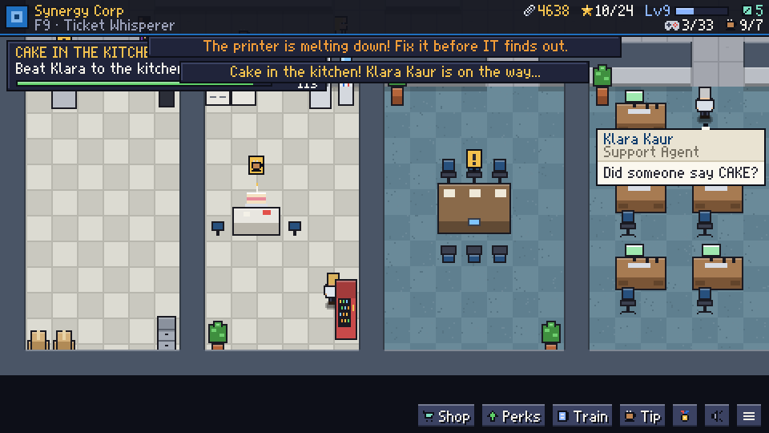
Cake in the kitchen. A colleague heard about it too. Beat them to the kitchen for 2 cups of coffee.
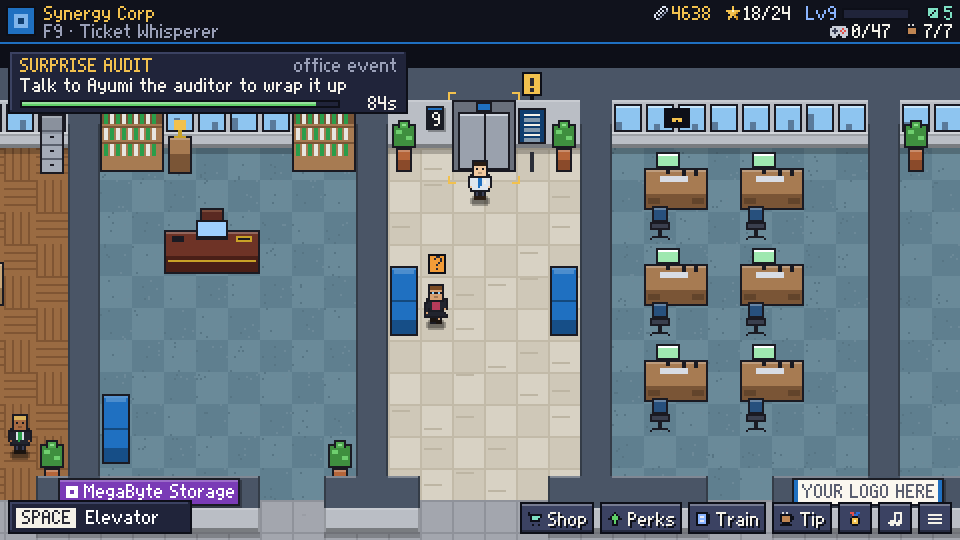
Surprise audit. Three stations are locked for 90 seconds. Find the auditor and talk to them to wrap it up early (pays XP).
Business trips
Floors 10 and 30 hide a secret opportunity: a business trip to a client. How you get it is up to you to find
out. Once you do, the pool car is yours for a drive of about three minutes through town, the
countryside, the motorway and a business park. Each checkpoint adds time to the clock. Overtake the traffic, slow
down for the sharp bends and keep off the verge. Hitting a car or a lamp post at speed is a crash: the car spins
out, loses its speed and takes a dent (the DMG gauge under the stage name, top left). It can take four; the fifth
crash wrecks it. A wreck or running out of time ends the trip for good. Every trip is a one-time offer.
Make it, and you have 15 minutes in the client's office, a much bigger floor than any in the tower. Tasks there
cost the usual coffee but pay double paperclips (no KPI stars, it is not your floor), and the client's coffee
brewers are ready again every 2 minutes. When the clock runs out, the pool car takes you back to the office. Had
enough? Walk out through the main entrance (the green EXIT in the lobby) at any time and you are straight back on
your floor.
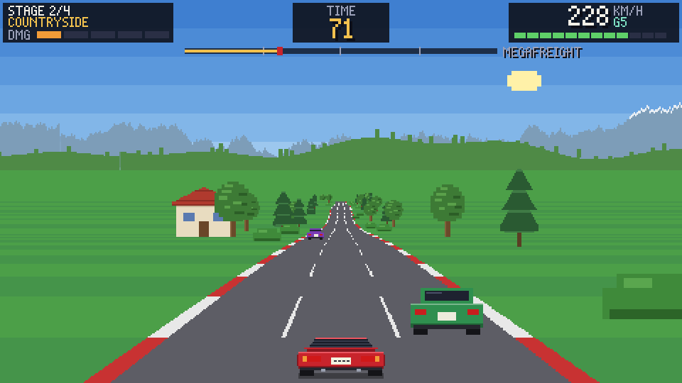
The drive. Up or Space accelerates, Down brakes, Left and Right steer. With a mouse or a finger, hold to drive and the car steers towards the pointer.
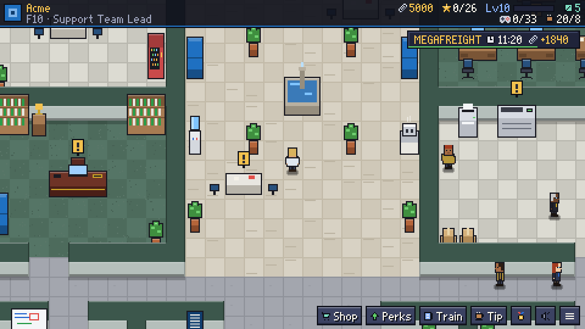
The client's office. Two corridors, a marble atrium and twenty tasks. The clock in the corner shows the time left and the paperclips earned.
Vacation
Floor 20 hides another secret: a holiday at the Paradise Palms Resort, a tropical five-star hotel. How you get
there is up to you to find out. Once you do, you have 15 minutes of ultra all inclusive: sleep in your suite, raid
the dinner buffet, bounce a beach ball in the pool, sip a cocktail at the tiki bar, get a massage in the spa
cabana, then head through the garden to the beach to sunbathe, build a sandcastle or swim out to the buoy from
the jetty. No office work allowed.
The activities are free and easy mini-games (see Holiday activities). Enjoy one (1 star or more) and you take an extra cup of coffee back to
the office, once per activity and stay. That coffee goes on top of a full pot and stays there until you drink it.
Want to get back to work early? Check out through the front door (the green EXIT in the lobby).
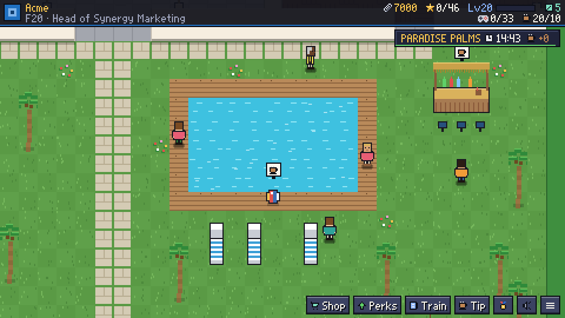
Paradise Palms. The garden, the pool and the tiki bar. A coffee cup marks each activity you have not enjoyed yet; the clock in the corner shows the time left and the coffee won.
The night shift
On floors 5, 15, 25 and 35 your manager is looking for a volunteer to hold the fort tonight. Say yes and everybody
(HR included) heads for the elevator, the lights go out and the office is yours for 10 minutes: a few
ceiling lamps still glow (some of them flicker), and the music turns a lot more dramatic.
At night the stations come back twice as fast (half the cooldown, including the ones already waiting when
the shift starts) and the floor's coffee machine brews a fresh round every 2 minutes. Tasks pay the usual
paperclips, XP and KPI stars. Anything that needs colleagues is closed until morning: HR reviews, floor quests,
the stand-up, office events and the coffee break chat. One shift a day, for all four floors together. The
elevator only offers to send you home early; either way you are back in the daytime office with everyone in,
and a card sums up your night.
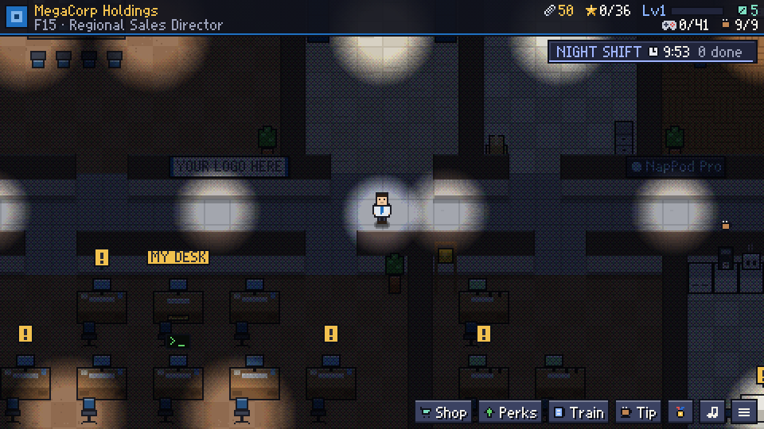
Night shift. The empty office in the dark. The clock in the corner shows the time left and the tasks done so far.
Home office
On floors 8, 18, 28 and 38 your manager thinks you look exhausted: "Finish it from home today." Say yes
and you are home in your own little flat for 10 minutes: a living room with your computer, a kitchen and a
bathroom. One home office day a day, for all four floors together, and it costs nothing.
The catch: your boss watches your status. The bar chart over your computer is your presence meter; it
runs down while you walk about and while you do your chores, and runs out after about two and a half minutes.
Pop over to the computer now and then to wiggle the mouse. If it runs dry, your status goes Away. Once or twice a
day the boss also calls: "Camera on in 20 s!" Get to the computer in time; a missed call counts as going
Away too. Three of those and the boss calls you back to the office for the rest of the day.
Meanwhile, the chores (see Home chores): vacuuming, the dishes, the laundry, the ironing and
a bath. Each costs 1 coffee and pays XP and a few paperclips the first time you get 1 star or more that
day, but never KPI stars. Out of coffee? Brew your own: the coffee maker in the kitchen is free and pours
3 cups (never past your mug's maximum). The better you brew, the sooner it is ready again (2 to 4 minutes).
Head back whenever you like through the front door. Come back on good terms (fewer than three lapses) and
every station on that floor is ready for you, cooldowns and all cleared. (Like the business trip, the holiday
and the night shift, the clock stands still while the game is paused.)
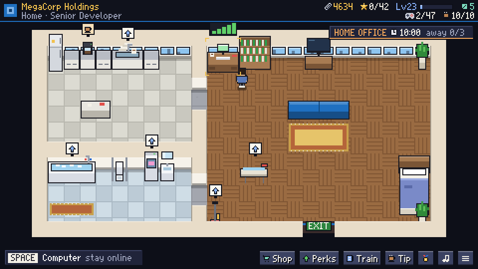
Home office. Your flat. The bar chart over the computer is your presence meter; the clock in the corner shows the time left and how many times your status went Away.
The lost folder
On floors 3, 13, 23 and 33, HR has a favour to ask if you drop by before you are promotion-ready: a personnel
folder went missing in the archive. Say yes and the elevator gets an extra button, A, down to the
basement: one huge, dark room of filing cabinets, lit by a few tired ceiling lamps and your own little light.
The folder is in one drawer somewhere at the far end, and you have 5 minutes from the moment the doors
open (the clock turns red for the last 15 seconds). Going through a cabinet takes about a second; the ones you
have checked are ticked off.
Get back into the elevator with the folder in time and take it to HR on your floor: they grant exactly what your
promotion still lacks (KPI stars, the level, the keycard fee), and then it is review time as usual. Run out of
time, or give up at the elevator, and you are back upstairs with nothing else lost, but the chance is gone: HR
asks only once per floor, so saying no is final too.
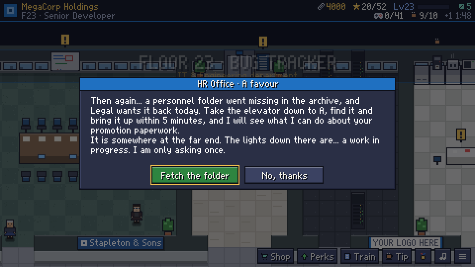
HR's favour, after the usual note on what you still need.
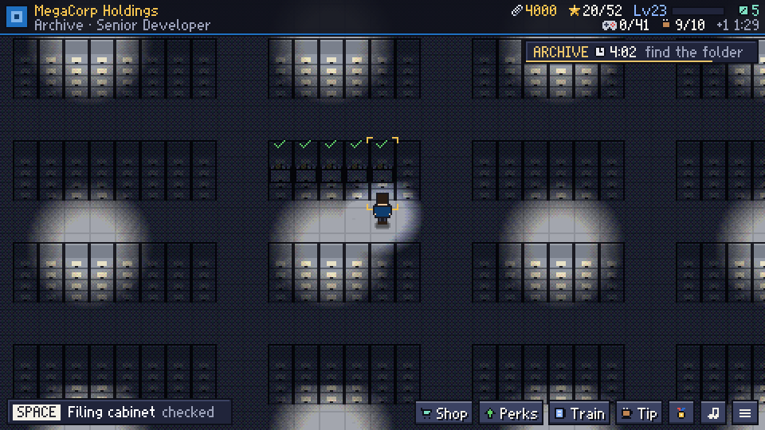
The archive. Rows of cabinets in the dark; the clock in the corner counts down from 5:00.
Up on the roof
The tower has a roof, and some of your colleagues know the way up. How you get there is up to you to find out
(keep your ears open). Up there: the best view in the company, a pay telescope with a few sights to spot,
the window cleaners' cradle, and a bench where the smokers gossip. They know things: when something is
about to happen downstairs, which station frees up next, and maybe where something lost has been hidden. The
sky follows your local time, from blue to sunset to the city lit up at night.
Nothing up there pays. And the roof is closed to staff: now and then someone from facilities comes out of the
roof door for a look round. Keep out of his sight. If he catches you, he walks you back down, and the way up
stays shut for the rest of the day (no HR strike: he was up there for a cigarette himself).
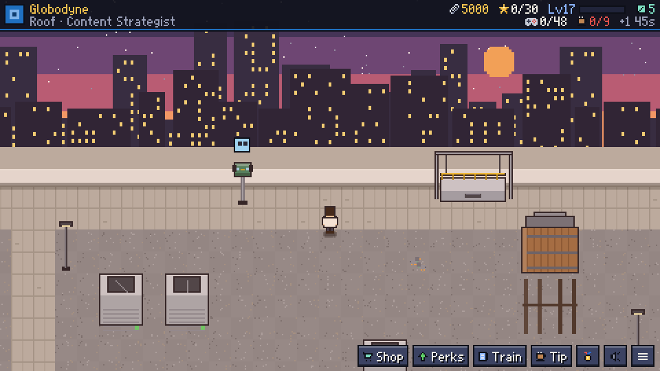
The roof. The city beyond the parapet, the pay telescope and the window cleaners' cradle.
Office conduct
On every floor one colleague stops for a coffee break chat when you talk to them: small talk, or ask them
out for a drink. You get a polite (and final) no, and HR makes a note: every ask is a strike. Ask again
and the answers get colder, colleagues start talking, and the card keeps count in its HR notes. Strikes add up
across all colleagues and floors.
The 5th strike puts you on compliance hold: your tasks, the elevator and the workstations are taped off
until you take the free Compliance & Ethics training at any HR office (see
the training). Pass it (70% of the answers right) and your record is cleared.
Fail it and you are demoted one floor, and the HR performance review there is due again. On the ground
floor there is no floor below: failing there gets you fired, and that career is over. (So does getting reported
before you have even checked in at reception: no badge, no way to HR.) Otherwise your
strikes start from zero, so it can all happen again, on any floor. Except with the colleague who reported you: they
will never be asked again. Lesson learned? We will see.
The Christmas party
Every year from 6 to 23 December the Fun Committee throws the office Christmas party. The first time you
step onto a floor in those weeks, their invitation pops up: Go now, or Later, and the elevator
keeps a red P · Christmas party button until you go. There is one party per career per year, so
once it has started, that year's is used up. (You need your badge from the front desk, no compliance hold, and
not to be away on a trip, a holiday, a night shift, a home office day or down in the archive.)
The party lasts 10 minutes in a hall of its own: a dance floor under a disco ball and sweeping coloured
lights, a DJ booth, a stage, a buffet, a bar, a big tree and a photo booth, with confetti and Santa hats
everywhere. The guests are colleagues you know from the floors you have worked on, and some of them are already
dancing. The CEO opens it with a speech, and the year-end bonus is 1 Stock Option for coming. Five
activities are free (no coffee), and each one pays double what a 3-star task pays on your highest floor,
the first time you get 1 star or more at it (never XP or KPI stars):
Dance-Off at the DJ booth: hit the arrows as they cross the line, on the beat of the party tune.
Secret Santa at the table by the tree: wrap your gift (cut the paper, tape the seam, tie the bow).
Do it with at least 1 star and your own Secret Santa gift is waiting: that year's little Christmas tree
for your desk, which no shop sells.
Carol Karaoke on the stage: keep your voice on the lane of the note being sung.
Christmas Buffet: All You Can Eat, with turkey, mince pies and gingerbread.
Photo Booth: four shots; strike the pose on each card (a fresh press for every card) and hold it when the flash goes off.
The bar is free too: mulled wine, eggnog and Synergy Punch. Drinks pay nothing; they only make the room
sway (and the mini-games with it), and after the third you start seeing double and the bartender pours
water only. Water sobers you up at once, and it wears off by itself, one drink every two minutes. Leave by the
elevator doors whenever you like; either way you are back on your floor with a summary of the night. (Like the
other timed stays, the clock stands still while the game is paused.)
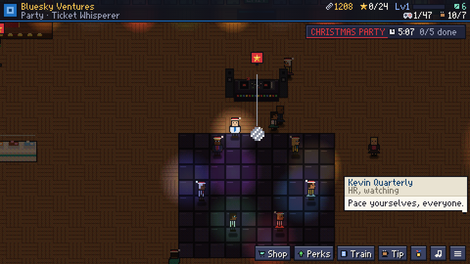
The Christmas party. The dance floor under the disco ball; the DJ booth behind it is the Dance-Off.
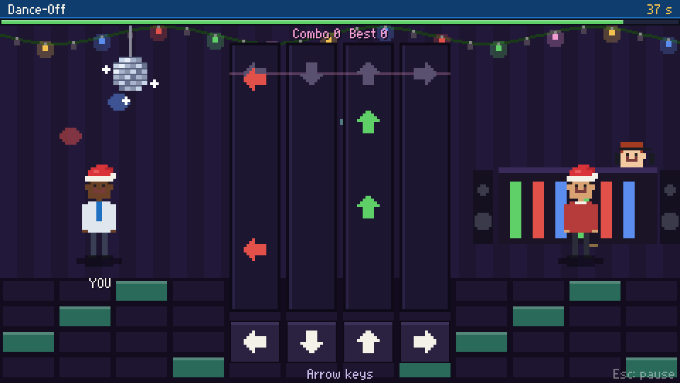
Dance-Off. Hit each arrow on the line, on the beat.
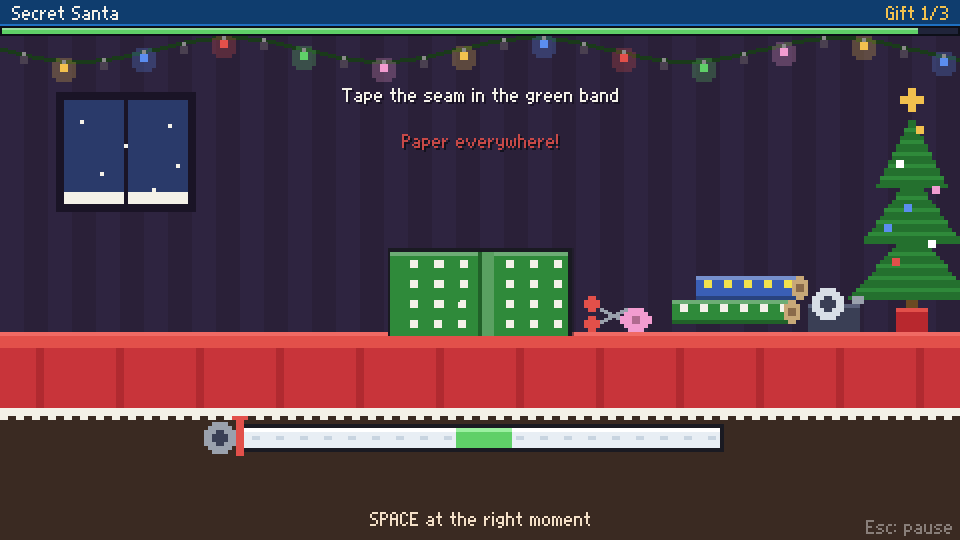
Secret Santa. Cut the paper, tape the seam, tie the bow, each in the green band.
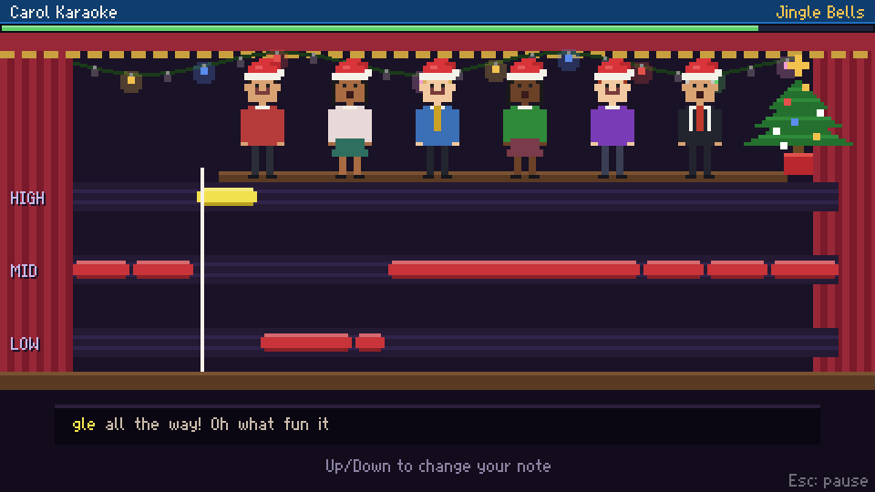
Carol Karaoke. Keep your voice on the lane of the note being sung.
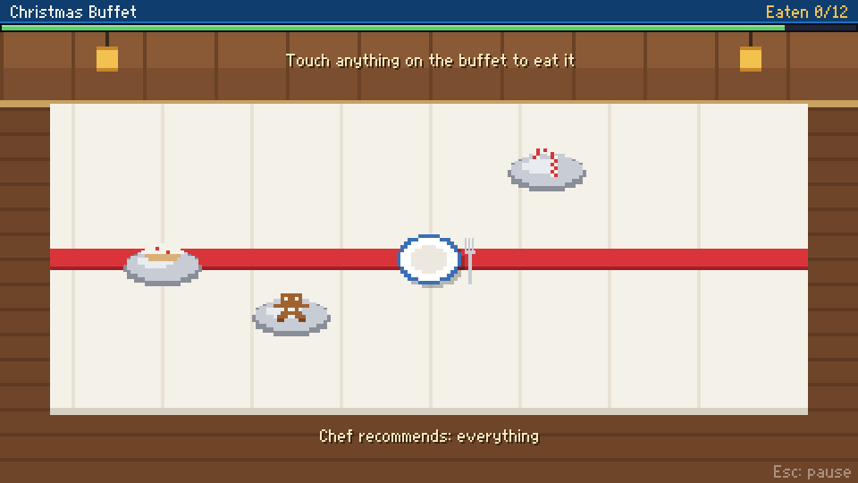
Christmas Buffet. All You Can Eat, with Christmas dishes.
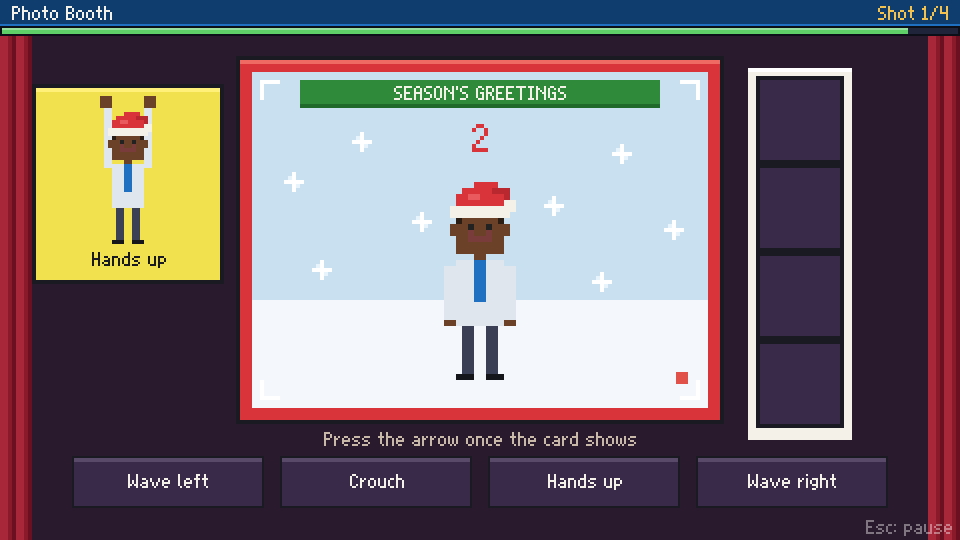
Photo Booth. Strike the pose on the card when the flash goes off.
Your desk
Every floor you reach has a desk with your nameplate, marked MY DESK until you decorate it. Your decorations move
with you from floor to floor: one on the left, one on the right and one on top of the monitor. Each floor's shop
sells its own selection of seven items (always some stationery) plus that floor's "Best Employee" trophy, which you
can only buy after meeting the floor's KPI star quota. Swap what is on show any time in the Collection tab.
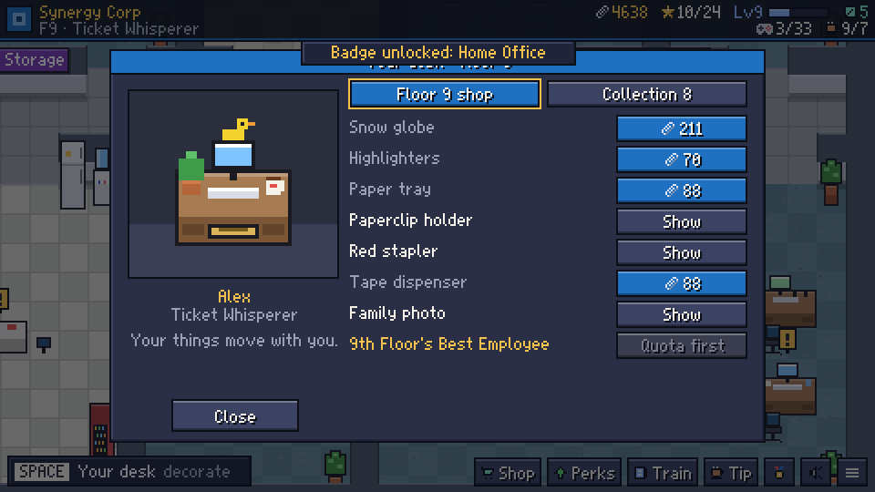
Your desk: this floor's shop and your collection.
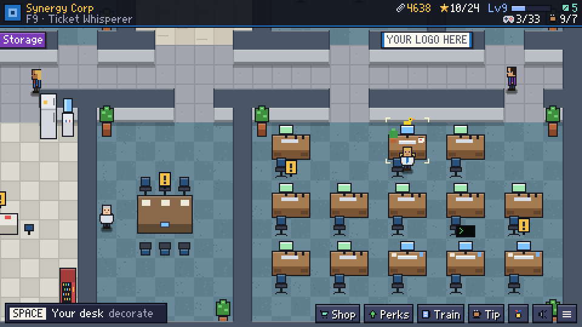
A plant, a mug and a rubber duck, on show on every floor.
Badges
47 badges hang on the badge wall (B or the medal button). Some come naturally, others take
a whole career, and six are secret:
First Day Finish your first task.
Signed In Check in at the front desk.
Overachiever Get 3 stars on a task.
Employee of the Month Get 3 stars on 25 tasks.
Workaholic Play 100 tasks.
Generalist Try every kind of mini-game.
Middle Management Reach floor 10.
Upper Management Reach floor 20.
Executive Material Reach floor 30.
Corner Office Become CEO.
Bootstrapped Reach floor 10 without spending Stock Options.
Seasoned Reach Seniority Lv20.
Feedback Loop Pass 10 HR performance reviews.
sudo make me CEO Change floors from a workstation terminal.
Restructuring Fire 10 colleagues.
Clean Sweep Fire the whole board on floor 40.
Daily Scrum Do a daily stand-up.
Agile Evangelist Do the daily stand-up 7 days in a row.
Safety Officer Reach the fire exit in time in 3 fire drills.
Let Them Eat Cake Get to the office cake first 3 times.
Printer Whisperer Fix 3 printer meltdowns.
Compliance Champion Help a surprise audit along.
Domestic Hero 3 stars on every chore in one home office day.
Always Online A whole home office day without your status going Away.
Camera Ready Answer all the boss's video calls on a home office day.
Party Animal Go to the office Christmas party.
Tipsy Have 3 drinks at one Christmas party.
Designated Driver No drinks at the party, 1+ star at every activity.
Home Office Put a decoration on your desk.
Interior Designer Collect 12 desk decorations.
Best Employee Put a floor's Best Employee trophy on your desk.
Caffeine Addict Use the coffee machine 25 times.
Paperclip Maximiser Hold 1,000,000 paperclips.
Lobby Master 3 stars on every task on floors 1-5.
Support Master 3 stars on every task on floors 6-10.
Sales Master 3 stars on every task on floors 11-15.
Marketing Master 3 stars on every task on floors 16-20.
IT Master 3 stars on every task on floors 21-25.
Finance Master 3 stars on every task on floors 26-30.
Legal & HR Master 3 stars on every task on floors 31-35.
Executive Master 3 stars on every task on floors 36-40.
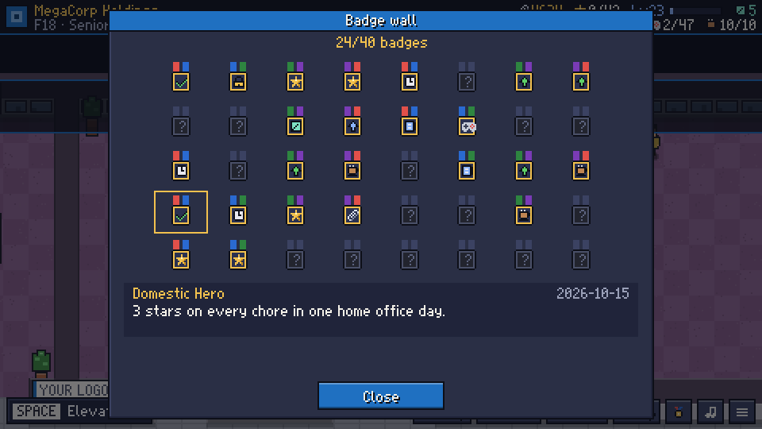
The badge wall. Locked badges show a question mark.
Floor 40: the CEO
Reach the top floor and you are the Chief Executive Officer. You can now decide your colleagues' fate: talk to anyone
on floor 40 and choose Fire, Keep or Later. Fire ten people for the Restructuring badge, or the whole board for
Clean Sweep.
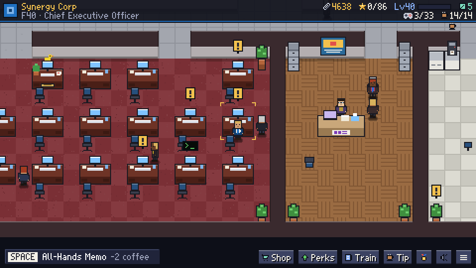
The CEO penthouse on floor 40.
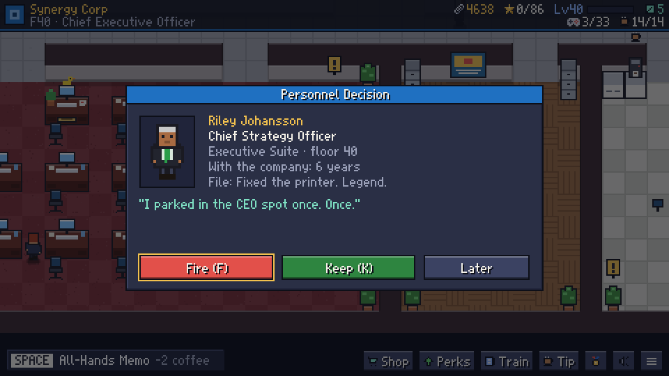
A personnel decision: Fire, Keep or Later.
Extras
The workstation terminal. One desk on every floor shows a >_ prompt. It opens a terminal;
type help and see what a curious employee can do.
Hallway posters. Every floor has a "YOUR LOGO HERE" spot and a (fake) ad. If you would like a real poster in
the game, get in touch.
Poke around. Most things in the office react when you walk up and press Space or click them, even
without the gold brackets that mark gameplay. Chairs, sofas, toilets and server racks get a comment,
a different one at random each time. The fridge opens: read the labels on everybody's lunch and keep an eye on the container at the back. Plants
have care tags and watering logs; some have a worm, some hide lost things in the soil. The vending machine takes
imaginary coins: pick a snack and watch the spiral turn. Sometimes it drops, sometimes it gets stuck and needs a
polite nudge, and sometimes you get something else entirely. In the HR office, the
filing cabinets hold a personnel file for every colleague on this and the neighbouring floors, and one about you.
None of it costs coffee or earns anything; it is just there to be found. A station with a task that is also a
fridge or a plant has a Peek button on its task card.
Several careers. A browser keeps up to 100 careers side by side. Continue career on the title screen
shows them all as employee ID badges, last played first: pick one with the arrow keys or a click, start a
New career, or Delete one you are done with (it asks twice). To switch careers, use
"Save & quit to title" in the menu. With 100 careers saved, delete one before you start another.
The menu (Esc) has Settings (music, sound effects and reminders), the quick guide, feedback and "Save & quit to title".
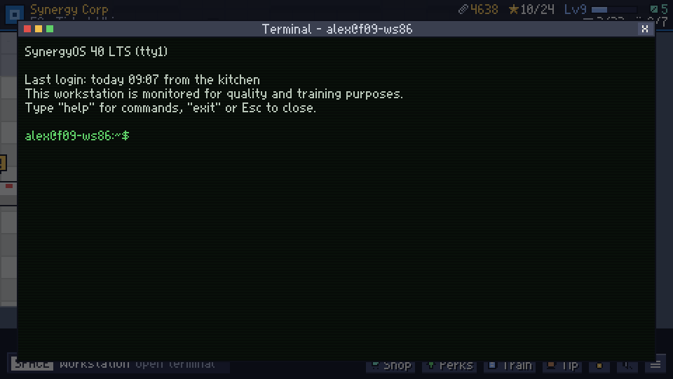
The workstation terminal.
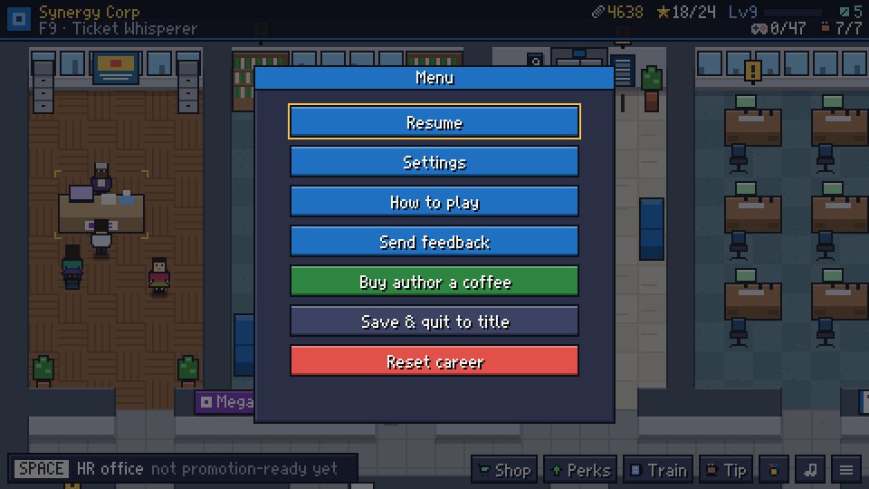
The menu.
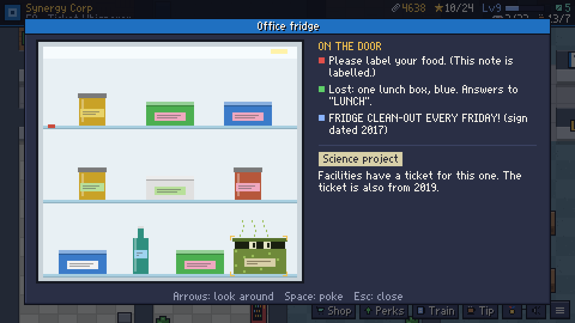
The office fridge. Something at the back moved.
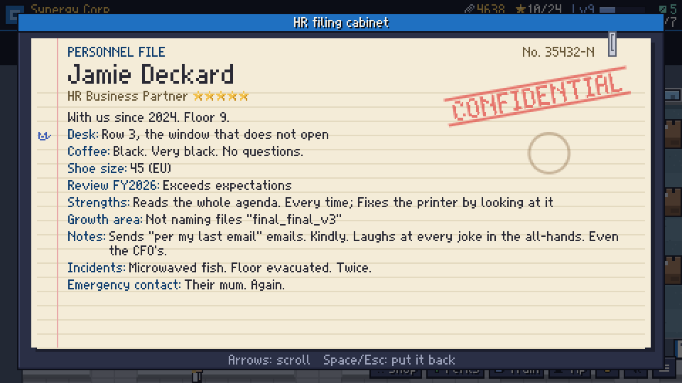
A personnel file from the HR filing cabinet.
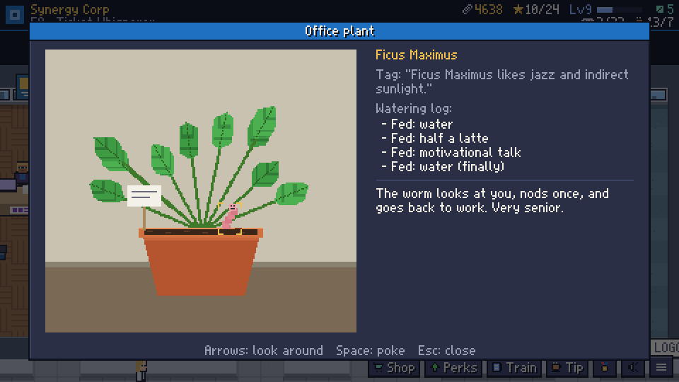
An office plant and its resident worm.
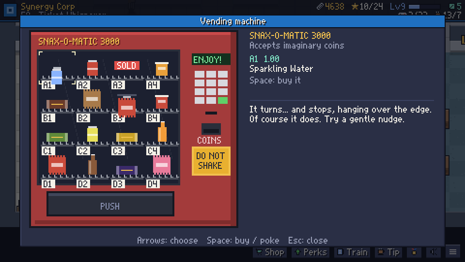
The vending machine. Stuck again: time for a gentle nudge.
All the mini-games
There are 48 mini-games. 33 of them are shared out across the tower's stations, so every floor has a different mix.
They come in three types; the type sets the coffee cost and the cooldown. Of the other 15, 8 are
holiday activities, waiting for you to find them, 6 are
home chores for a home office day, and one is a
smoke break on the roof. Every game has a time limit of about 90 seconds or
less, and works with the keyboard, the mouse and touch. The screenshots show the Customer Support versions; other
departments use their own words and props.
Quick tasks: 1 coffee (11 games)
Reflex games and one-choice-per-round games. Cheap to play, but the station then rests the longest (4x the base cooldown).
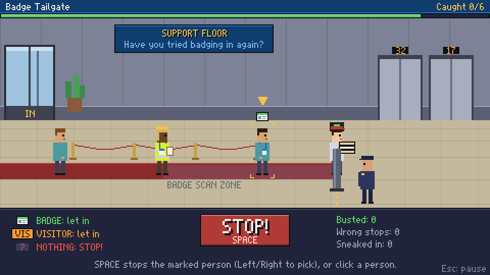
Badge Tailgate 1 coffee
Guard the badge gate. Stop anyone without a badge beep or a VISITOR sticker before they get through; stopping legitimate staff costs you.
Controls: Stop people without a badge (green BEEP) or VISITOR sticker before they pass the gate. SPACE stops the marked person (Left/Right to change), or click a person.
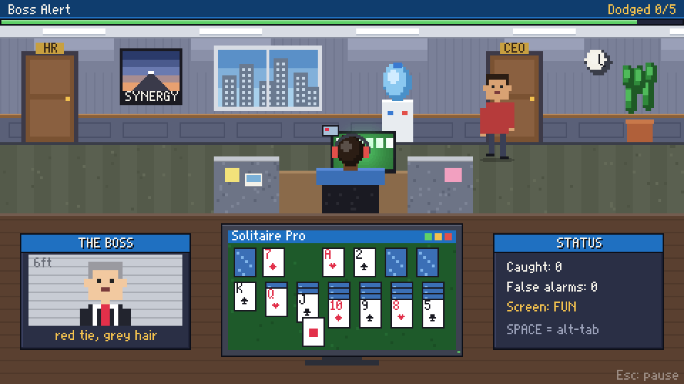
Boss Alert 1 coffee
You are playing solitaire at work. Alt-tab right before the boss with the red tie walks past your desk; false alarms cost you.
Controls: Press SPACE (or click) to alt-tab right before the BOSS (red tie) passes your desk. False alarms cost you.
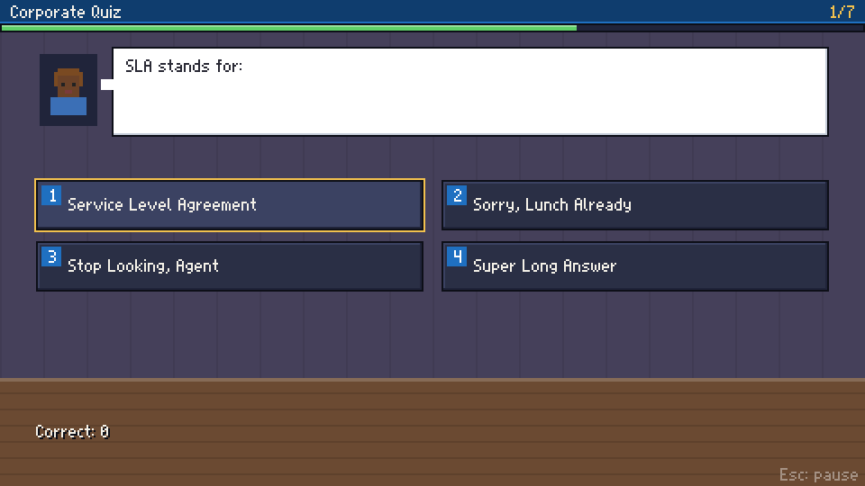
Corporate Quiz 1 coffee
Corporate trivia with a ticking clock: pick the best answer to each question.
Controls: Pick the best answer before time runs out. Keys 1-4 or arrows + Space, or click.
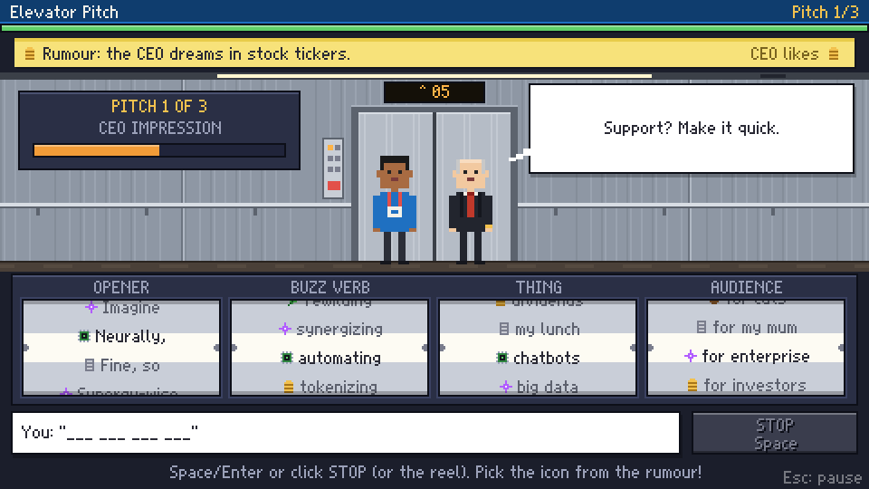
Elevator Pitch 1 coffee
Thirty seconds in the elevator with the CEO. Stop each slot reel on the word the CEO will love; the rumour at the top tells you what they like.
Controls: Stop each reel (Space/Enter, click STOP or the reel) on the word the CEO will love. Follow the rumour icon!
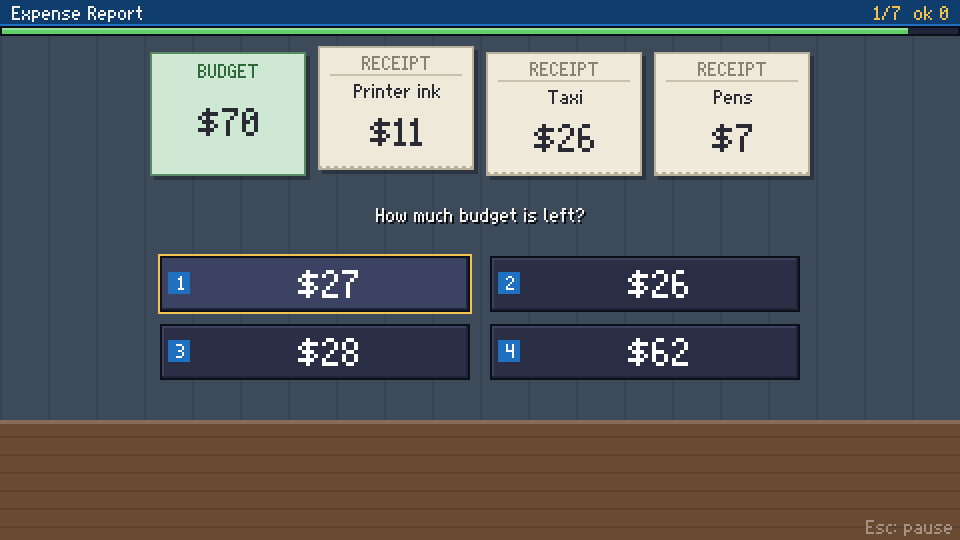
Expense Report 1 coffee
Receipts versus budget. Add up the receipts and pick how much budget is left from four amounts.
Controls: Add up the receipts and pick the right amount. Keys 1-4 or arrows + Space, or click.
Inbox Triage 1 coffee
Mail, tickets and requests drop into your inbox one after another. Sort each one into the right of three bins before it slips past: left is for what needs you, the middle for what is kept for later, right for junk. The bins follow the department (Reply / Archive / Spam for mail, Solve / Escalate / Close in Customer Support) and each one shows its rule, e.g. "needs an answer" under Reply. A mail's sender is a good clue.
Controls: Sort each item into the right bin. Keys: ← ↓ → (or 1 2 3), or click a bin.
Jargon Decoder 1 coffee
The boss says a buzzword. Pick what it REALLY means.
Controls: The boss says a buzzword. Pick what it REALLY means. Keys 1-4 or arrows + Space, or click.
Meeting Buzzword Bingo 1 coffee
Sit through a meeting with a buzzword bingo card. Mark a word the moment someone says it and complete as many lines as you can.
Controls: When someone says a word on your card, press Space or click it. Complete the lines!
Perfect Timing 1 coffee
Fix the jammed printer: mash to fill the power bar, then strike when the needle is in the green zone (yellow counts half).
Controls: First MASH Space (or click) to fill the bar, then press it when the needle is in the green zone. Yellow = half.
Schedule the Meeting 1 coffee
Busy colleagues, one meeting. Find the time slot where every attendee is free and book it, round after round.
Controls: Find the slot where everyone is free. ← → to choose, Space to book, or click the column.
Whack-a-Bug 1 coffee
Bugs (or tickets) pop up on a 3x3 grid. Hit them before they escape, but spare the decoys like thank-you notes.
Controls: Hit targets as they pop up: numpad keys 7-9/4-6/1-3, arrows + SPACE, or click. Spare the decoys!
Medium tasks: 2 coffee (13 games)
Memory, typing and juggling games. Two cups, 1.5x the base cooldown.
Coffee Crossing 2 coffee
Carry your coffee from the kitchen to your desk across the busy office floor without bumping into anyone. Hold an arrow key to keep hopping.
Controls: Carry your coffee from the kitchen to your desk. Arrows hop (hold to keep going) or click beside you. Dodge traffic!
Coffee Run 2 coffee
Memorise every colleague's coffee order (size, drink, milk), then rebuild each order from memory.
Controls: Memorise every order, then rebuild each one. Keys 1-4, arrows + Space, or click.
Desk Plant Survival 2 coffee
Keep the desk plant alive for a quarter: water and light in the green bands, blinds open or closed, pests sprayed.
Controls: Keep water and light in the green bands and squash pests. 1/W water, 2/B blinds, 3/SPACE spray, or click.
Expense Fraud Detective 2 coffee
Expense claims under the microscope. Approve the legitimate receipts and reject the fraud: check dates, amounts, reasons and duplicates.
Controls: Check each receipt: APPROVE (A / Right / click) the legit ones, REJECT (R / Left / click) the fraud. Watch for duplicates!
Meeting Survival 2 coffee
Stay awake in a long meeting: sip coffee to keep your eyelids up (not too often, or the jitters get you) and nod only when a buzzword is said.
Controls: Stay awake: SPACE or click the mug to sip (not too often!). Nod with N / Up / NOD button ONLY at buzzwords.
Name Badge Memory 2 coffee
Name badges lie face down. Flip two at a time and match the pairs in as few turns as possible.
Controls: Flip two badges at a time and match the pairs. Arrows + Space, or click.
PowerPoint Karaoke 2 coffee
Present slides you have never seen. For each chart, pick the narration that actually matches it.
Controls: Present slides you have never seen: pick the narration that matches the chart. Keys 1-4, arrows + Space, or click.
Quarterly Ticker 2 coffee
A live share price. Buy when it is low, sell when it is high and reach the profit target before the closing bell.
Controls: BUY (↑ / 1 / click) when low, SELL (↓ / 2 / click) when high. Reach the profit target before the bell.
Rapid Reply 2 coffee
A chat window full of customers. Type each canned reply exactly as shown: speed counts, typos cost accuracy.
Controls: Type each phrase exactly. No keyboard? Click the tile with the next letter.
Reply-All Apocalypse 2 coffee
Someone hit Reply All. Delete the "RE:" replies before the inbox overflows, and never delete starred mail.
Controls: Someone hit Reply All. Delete the RE: replies (click, or Up/Down + SPACE or X) before the inbox overflows. Never delete starred mail!
Server Rack Sequence 2 coffee
The eight numbered servers in the rack blink in a sequence. Repeat it from memory; every round adds one more server.
Controls: Watch the servers blink, then repeat them: keys 1-8, Up/Down + Space, or click a server. Each round adds one more.
Slide Deck Order 2 coffee
A process has been shuffled. Pick its steps in the correct order to rebuild the slide deck.
Controls: Pick the steps in the correct order. Number keys, arrows + Space, or click.
Write the Email 2 coffee
An email with gaps in it. Pick the phrase that fits each blank so the message makes (corporate) sense.
Controls: Fill each blank with the right phrase. Keys 1-4 or arrows + Space, or click.
Complex tasks: 3 coffee (9 games)
Puzzles and multi-step tasks, including the floor quests. Three cups, but the station is ready again soonest (0.75x).
Cable Spaghetti 3 coffee
A tangle of patch cables. Re-patch each port to the socket of its colour without ever touching PROD.
Controls: Re-patch every cable to the socket with its colour. Click a port, then a socket (or arrows + SPACE). Never touch PROD!
Calendar Defender 3 coffee
Tower defence on your calendar: place excuses (Decline, Out of Office, Double-booked, Headphones) to stop meeting invites from reaching your Focus Time.
Controls: Defend your Focus Time from meeting invites. Pick a defence (1-4 or click the bar), then place it on the calendar (click, or arrows + SPACE).
Fix the Spreadsheet 3 coffee
A quarterly report where some Totals are wrong. Flag every row whose Total is not the sum of its columns, then submit. Flagging correct rows costs points.
Controls: Flag every wrong Total (click it, or Up/Down + Space). Enter or Submit when done.
Fridge Tetris 3 coffee
Fridge Tetris: fit the lunches into the office fridge and fill whole shelves to clear them.
Controls: Fit the lunches into the fridge and fill whole shelves to clear them. Arrows move, UP rotates, SPACE drops; or aim with the mouse, click to drop, wheel to rotate.
Magic Chart 3 coffee
Turn the knobs, sliders and switches until the KPI chart climbs to the target line. Each control moves the chart in its own way.
Controls: Tune the knobs, sliders and switches until the chart climbs to the target. ←/→ pick, ↑/↓ adjust (or click / drag / wheel).
Org Chart Shuffle 3 coffee
A surprise reorg and a leaked HR memo. Drag every badge into the org chart so that all the clues hold, then submit the reorg.
Controls: Surprise reorg! Drag each badge into the chart so every clue holds (or click a badge, then a box). Keys: arrows + SPACE to pick/drop. SUBMIT REORG when done.
Password Policy 3 coffee
IT forces a password change. Type a password that turns every rule green, submit, and a new rule appears. Three failed attempts lock you out.
Controls: IT forces a password change. When every rule is green, SUBMIT (Enter) - then a new rule appears. Type, or click the key tiles. 3 failed attempts lock you out!
360 Feedback 3 coffee · floor quest
A floor quest. Find the named colleague somewhere on the floor and chat with them, then come back to the station and fill in their 360 review from what they told you.
Controls: Track down the colleague on this floor and chat with them, then come back here and fill in their review from what they said.
Lost Password 3 coffee · floor quest
A floor quest. You are locked out and your password is your pet's name. Search the floor's whiteboards for the photo of your pet, then log back in.
Controls: You are locked out! Your password is your pet's name and a photo of your pet is on a whiteboard somewhere on this floor. Find it, then log back in.
Holiday activities (8 games)
Not station games: you play these on holiday at the Paradise Palms Resort (see Vacation). They are free and easy, and each one you enjoy sends you back to the office with an extra cup of coffee.
All You Can Eat free · holiday
Dinner at the restaurant buffet, all inclusive. Dishes slide along the buffet: steer your plate into them to eat everything you can.
Controls: Move your plate with the mouse or the arrow keys and touch the dishes on the buffet to eat them. Everything is included!
Counting Sheep free · holiday
Sleep in, in your suite. Sheep jump over the fence one by one; count each one while it is in the air and drift off.
Controls: Press SPACE or click while each sheep jumps over the fence to count it. Count them all and drift off...
Deep Tissue free · holiday
A massage in the spa cabana. Knots appear on the back and wait patiently; find each one and let it go.
Controls: Click the knots on the back, or move the hands with the arrow keys and press SPACE. Let them all go.
Golden Brown free · holiday
Sunbathing on the beach. The side facing the sun tans: turn over while the tan is golden, before you go lobster red. Four turns.
Controls: Your side facing the sun tans. Press SPACE or click to turn over while the tan is golden, before you burn. Four turns.
Pina Colada free · holiday
A cocktail at the tiki bar. The barman throws the fruit; catch it in the glass. There is nothing bad to dodge.
Controls: Move the glass with the arrow keys or the mouse and catch the falling fruit. The more fruit, the better the cocktail!
Pool Ball free · holiday
Keep a slow beach ball out of the pool by staying under it.
Controls: Move left and right (arrows or mouse) to stay under the beach ball and bounce it. Keep it out of the water!
Sandcastle free · holiday
Build the tallest sandcastle on the beach: tip each bucket of sand as it swings over the castle. Six layers make a castle.
Controls: Press SPACE or click to tip the bucket when it swings over the castle. Six layers make a castle!
Swim to the Buoy free · holiday
Swim from the jetty out to the buoy and back, one stroke at a time, through gentle waves.
Controls: Press SPACE, an arrow key or click for each stroke. Swim out to the buoy, touch it and swim back to the jetty.
Home chores (6 games)
Not station games: you do these in your flat on a home office day (see Home office). Each chore costs a cup of coffee and pays XP and a few paperclips once a day (never KPI stars); the coffee maker is free and pours you 3 cups.
Dust Buster 1 coffee · home
Vacuum the living room. Dust bunnies are scattered over the floor and shuffle away when the vacuum comes near: steer over every one of them.
Controls: Steer the vacuum with the arrow keys or the mouse and suck up every dust bunny. They shuffle away when you get close.
Squeaky Clean 1 coffee · home
A week of plates in the sink. Scrub each one clean with back-and-forth strokes, then drop it into the drying rack as it swings over the gap. Miss and it breaks.
Controls: Scrub with LEFT, RIGHT, LEFT, RIGHT (or drag the mouse across the plate), then press SPACE or click as it swings over the gap in the rack.
Separate Cycles 1 coffee · home
Clothes drop out of the basket one by one. Sort each into the right wash before it lands: whites hot, colours warm, and anything wool or silk on the delicate cycle, whatever its colour.
Controls: LEFT (or 1) whites, DOWN (2) colours, RIGHT (3) delicates, or click the drum.
Pressing Matters 1 coffee · home
A shirt full of creases for tomorrow. Press each one flat with the iron, but keep it moving: an iron left standing on the fabric scorches it.
Controls: Move the iron with the arrow keys or the mouse over every crease. Keep it moving.
Just Right 1 coffee · home
A bath with two taps. The water cools by itself; keep it inside the comfort band, which shifts as you relax, and the bubbles rise.
Controls: Hold LEFT for the cold tap, RIGHT for the hot one, or hold the mouse on a tap.
Home Brew free · home
Your own coffee maker. Grind the beans, stop the kettle just off the boil, then pour three cups, each stopped at the line. A good pot is ready again sooner.
Controls: Mash SPACE (or click) to grind, then press as the kettle reaches the green band, then stop each cup at the line.
On the roof (1 game)
Not a station game: you are offered it by the smokers on the roof (see Up on the roof). It is free and pays nothing, but it counts towards the games you have played.
Smoke Break free · roof
A cigarette with a colleague. Keep the ember in its sweet spot: draw too little and it goes out (relight it, if the wind lets you), too much and you cough. Gusts fan or cool it. Flick the ash before it lands on your tie, and stub it out before the ember reaches the filter and your fingers.
Controls: Hold SPACE (or the mouse, or a finger) to draw, F or the button to flick the ash and, at the filter, to stub it out.
The HR performance review
Not a station game: you play it at the HR desk once you are promotion-ready (see Getting promoted).
Performance Review 2 coffee · HR desk
The HR performance review. Tell HR what they want to hear; you need 60% of the answers right to pass.
Controls: Tell HR what they want to hear. Score 60% to pass. Keys 1-4, arrows + Space, or click.
Compliance & Ethics Training free · HR desk, on hold
Only while you are on compliance hold (see Office conduct). An e-learning module about boundaries, gifts, passwords and the office fridge; you need 70% of the answers right, or you are demoted one floor.
Controls: Keys 1-4, arrows + Space, or click.
Tips
Mix the game types: complex games cost more coffee but come back quickly, quick games are cheap but rest for a while.
Stars add up, so a 2-star replay often beats waiting for a perfect run.
Visit the coffee machine on the floors you pass: each one has its own 15-minute timer.
Do the daily stand-up first: it is free and pays double.
Short on level but rich in paperclips? The Training Center closes the gap.
The Bigger Mug and Espresso Machine are the best early perks: more coffee means more tasks per session.